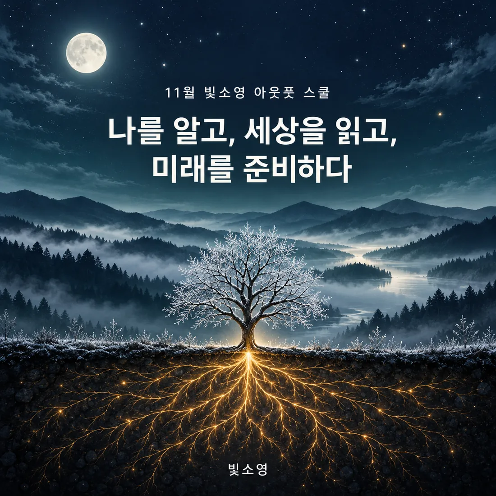
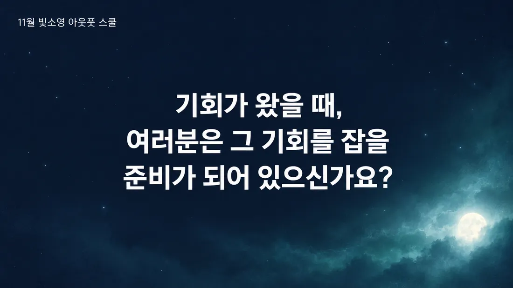
기회가 언제 찾아올지는
아무도 모르죠.
하지만 기회가 왔을 때
잡을 수 있는 사람과
그냥 흘려보내는 사람의 차이는 무엇일까요?
저는 그 차이 중 하나가
평소에 쌓아온 내공이라고 생각해요.
아웃풋 스쿨은
바로 그 내공을 쌓는 곳이에요.
당장 눈에 보이는 결과가 없더라도
나를 이해하고, 세상을 공부하고,
생각하는 힘과 실행하는 힘을 기르는 거죠.
저는 그동안 코칭을 하면서
자신을 잘 안다고 생각하지만
실제로는 그렇지 않은 경우를 많이 봤어요.
나를 제대로 이해하지 못하면
무엇을 준비해야 할지,
어떤 기회가 나에게 맞는지도
판단하기 어렵겠죠.
2027년, 세상은 또 얼마나 달라질까요?
AI의 발전으로
변화의 속도는 더 빨라지고 있어요.
세상의 변화를 읽고,
나의 강점을 알고,
필요한 실력을 미리 쌓아두는 것.
11월에는 그 준비를 함께하려고 해요.^^
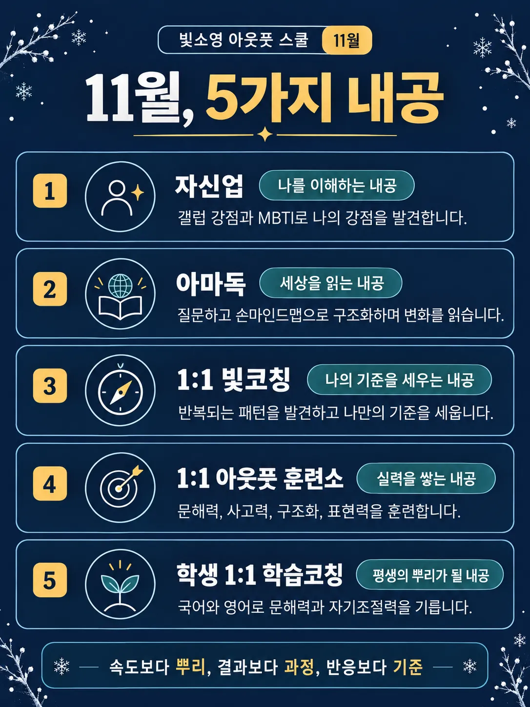
1. 자신업 | 나를 이해하는 내공
나는 어떤 사람이고,
무엇을 잘할까요?
갤럽 강점과 MBTI를 참고해
나의 생각과 행동 패턴을 살펴봅니다.
몰랐던 강점을 발견하고,
이미 가진 강점을 삶과 일에서
활용하는 방법을 찾아가요.
나를 알아야
나에게 맞는 기회도 알아볼 수 있으니까요.
2. 아마독 | 세상을 읽는 내공
2027년에는 어떤 변화와 기회가 찾아올까요?
세상의 흐름을 살펴봅니다.
질문하고, 손마인드맵으로 구조화하고,
자신의 언어로 표현하며
생각의 깊이를 더해요.
변화를 뒤쫓기보다
미리 읽고 준비하는 힘을 기릅니다.
3. 1:1 빛코칭 | 나의 기준을 세우는 내공
열심히 살고 있는데도
방향이 맞는지 고민될 때가 있죠.
질문과 대화를 통해 내면을 살펴보고,
반복되는 생각과 행동의 패턴을 발견해요.
내가 원하는 삶과 중요한 가치를 분명히 하며
나만의 기준을 세워갑니다.
기회 앞에서 흔들리지 않고
나에게 맞는 선택을 할 수 있도록요.
4. 1:1 아웃풋 훈련소 | 실력을 쌓는 내공
많이 아는 것과
실제로 해내는 것은 다르죠.
문해력, 사고력, 구조화 능력, 표현력을 훈련하고
개별 피드백과 재훈련을 통해
부족한 부분을 채워갑니다.
배운 것을 자기 힘으로 꺼내 쓰는 연습을
반복해요.
기회가 왔을 때
생각에만 머무르지 않고
실력으로 보여줄 수 있도록요.
5. 학생 1:1 학습코칭 | 평생의 뿌리가 될 내공
저도 남매쌍둥이를 키우면서
아이마다 얼마나 다른지 매일 느끼고 있어요.
그래서 아이마다 다른
강점과 부족한 부분을 살펴보며 지도합니다.
초등학생과 중학생을 대상으로
국어와 영어를 중심으로
문해력과 사고력 등 인지능력,
자기조절력과 끈기, 회복탄력성 등
비인지능력을 함께 기릅니다.
수능까지의 큰 그림을 보고 준비하지만,
수능이 끝은 아니에요.
스스로 생각하고 판단하며
자기 인생을 주도적으로 살아갈 수 있도록,
어릴 때부터 단단한 뿌리를 만들어가는
시간입니다.
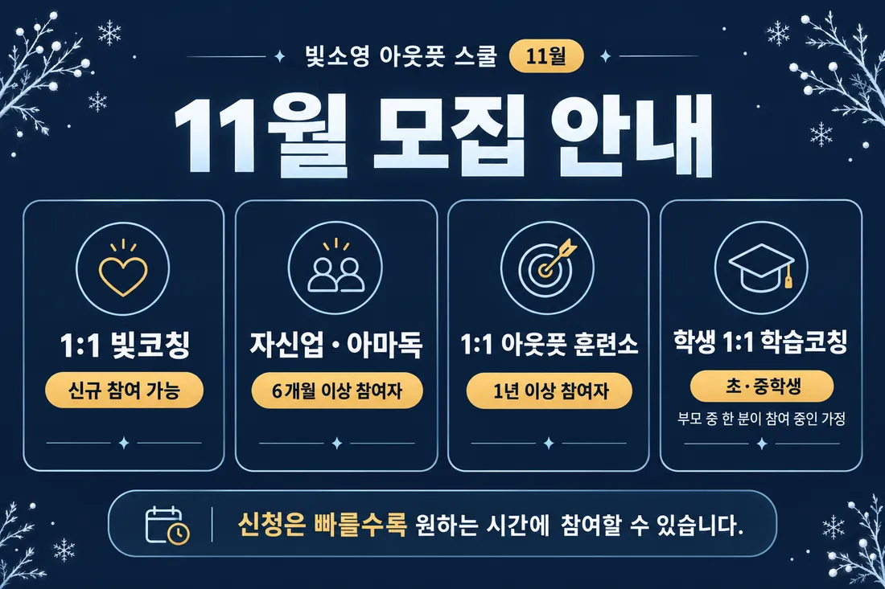
저는 눈에 보이는 성과만큼이나
보이지 않는 내공을 중요하게 생각해요.
나를 이해하는 힘,
세상을 읽는 눈,
스스로 판단하는 기준,
배운 것을 실행하는 실력.
이 모든 것이 쌓여
나의 뿌리가 되는 거죠.
기회가 왔을 때 준비하는 사람이 아니라,
기회가 오기 전부터 준비해 온 사람.
아웃풋 스쿨에서
함께 그런 사람이 되어가면 좋겠어요.
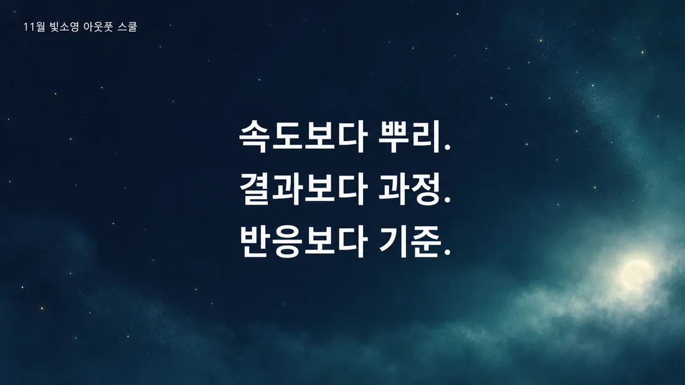
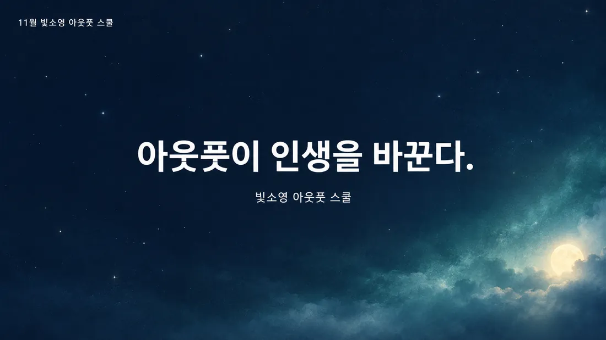
빛소영 아웃풋 스쿨
11월 모집을 지금부터 시작합니다.^^
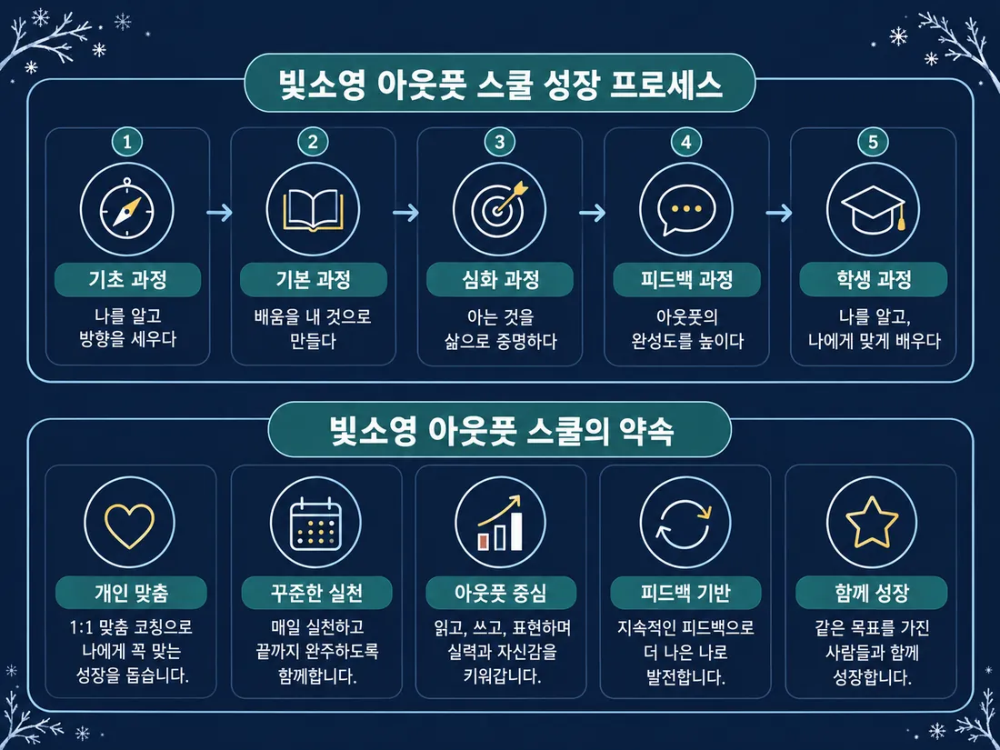
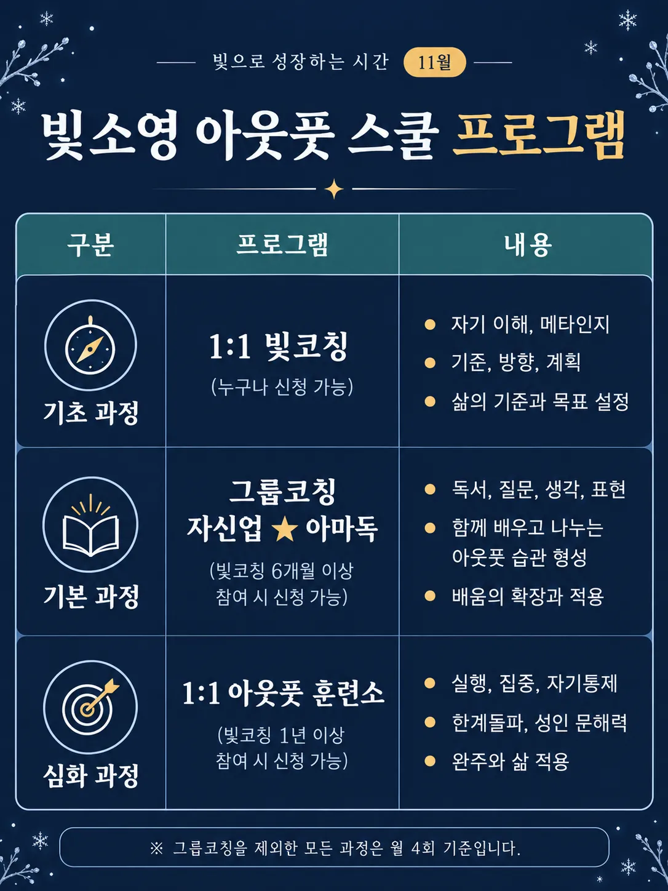
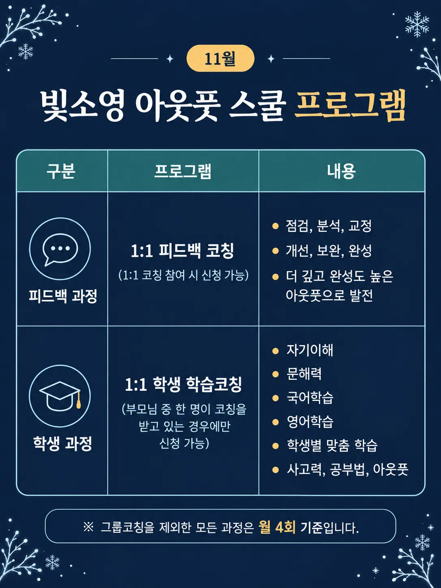
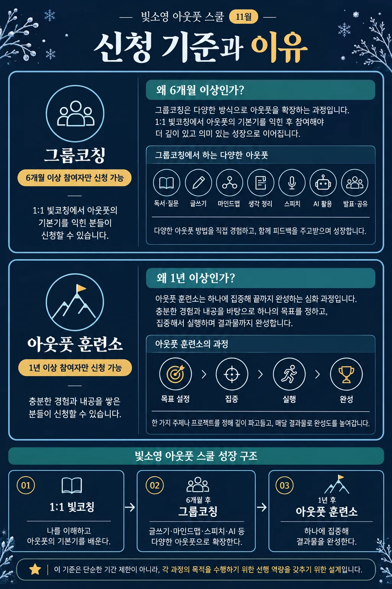
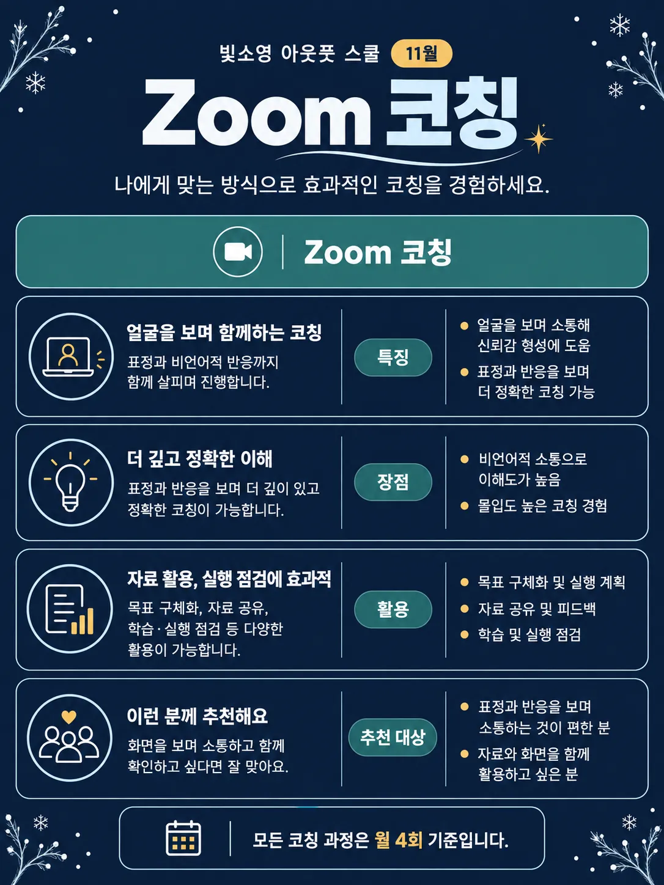
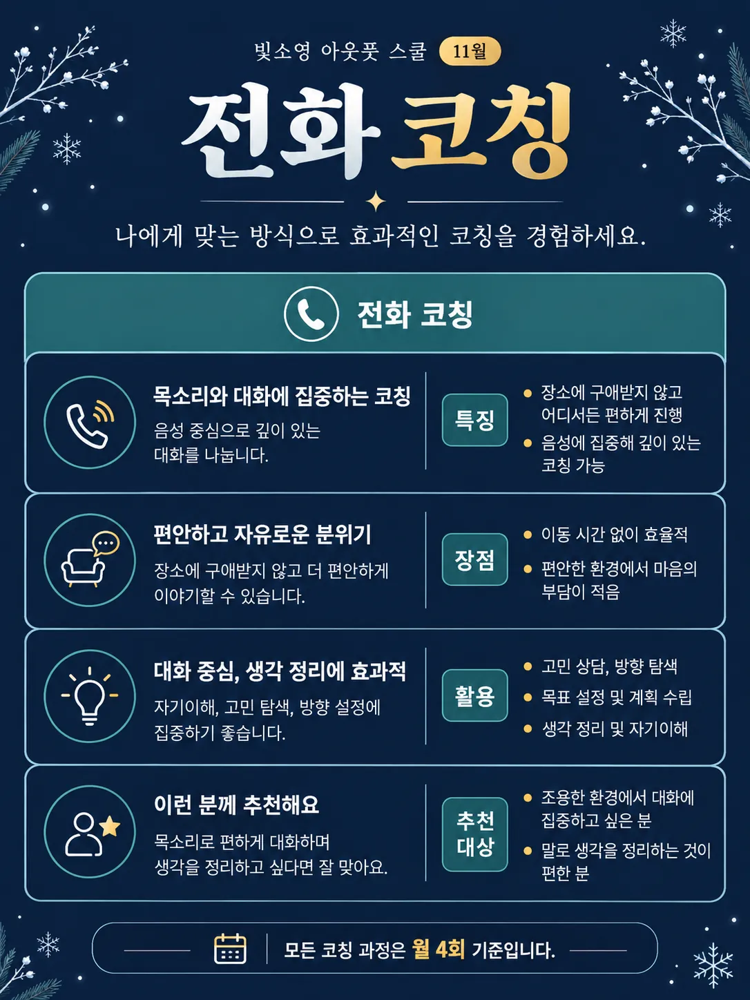
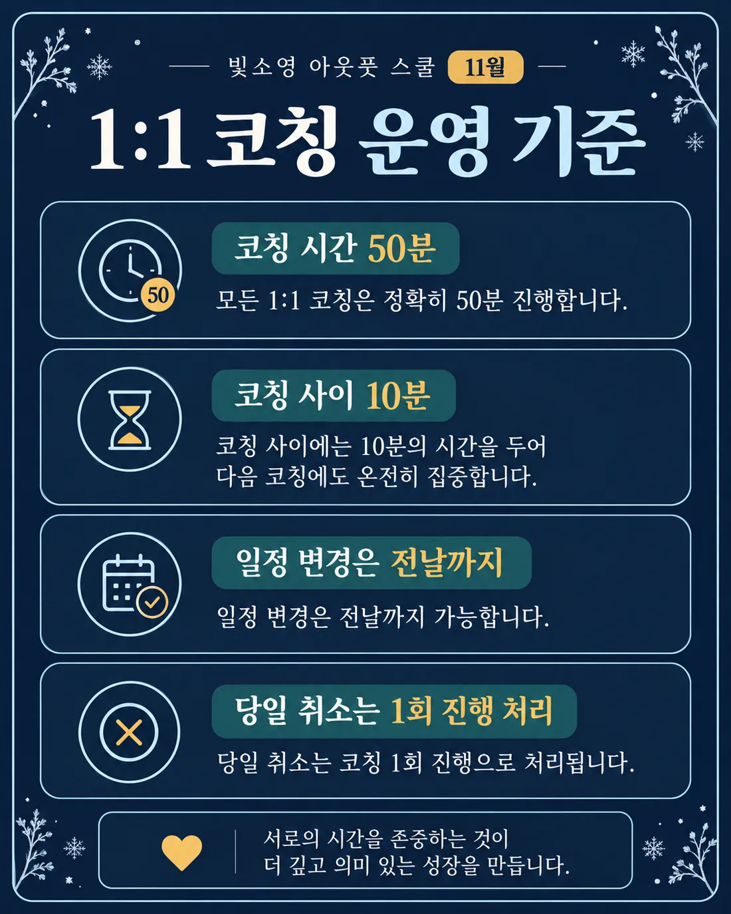
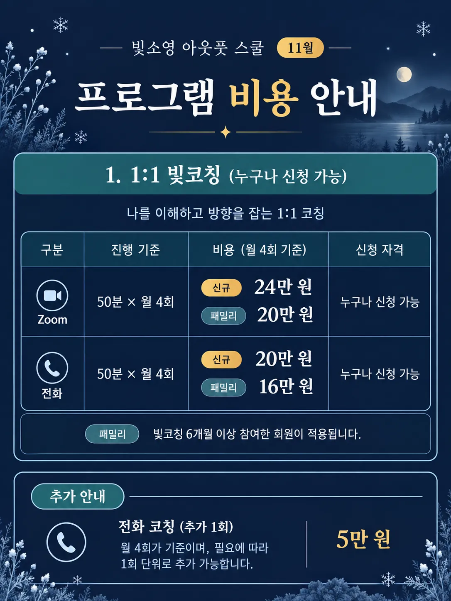
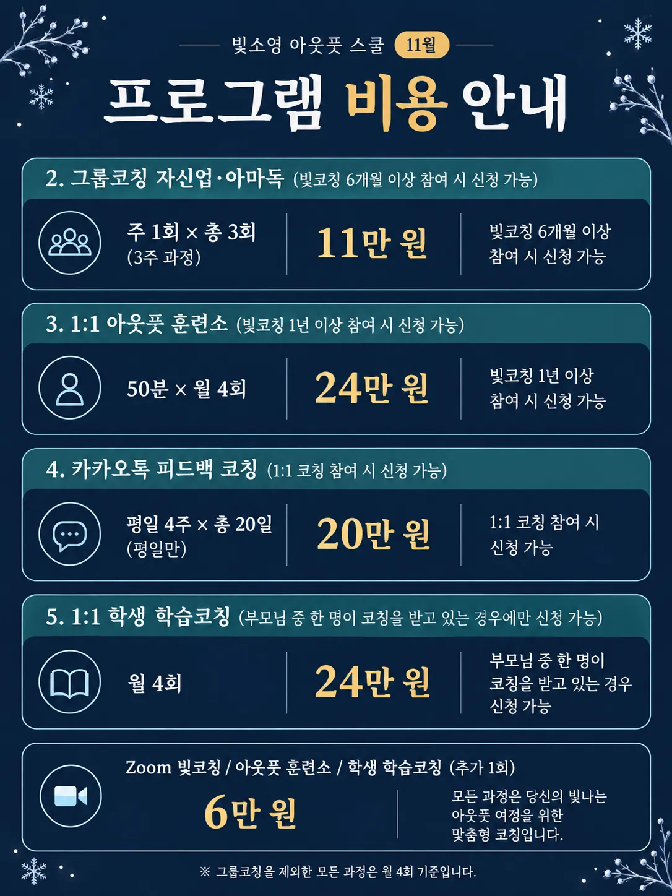
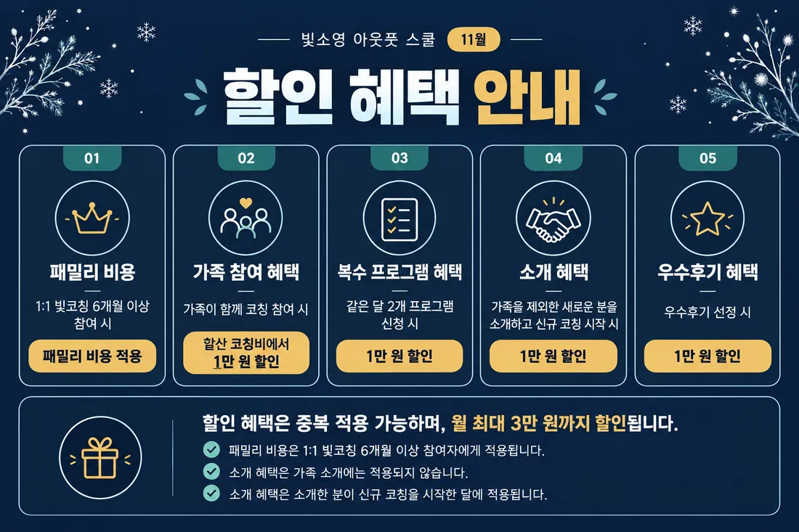
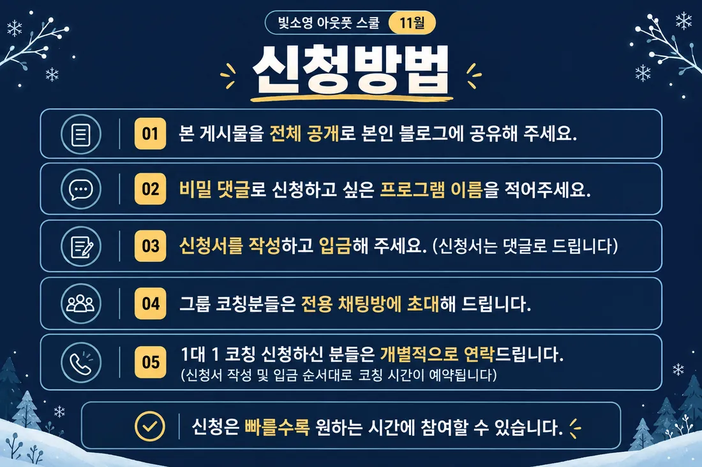